Laptop to propeller, with no network in between.
What a command actually does on the way to the aircraft, the three behaviours built on top of it, and how far each one has been taken.
What a command actually does on the way to the aircraft, the three behaviours built on top of it, and how far each one has been taken.
How it works
A command leaves the laptop over 915 MHz LoRa, a long-range, low-power radio that needs no network of any kind. The Jetson relays it to the flight controller over MAVLink, the standard autopilot protocol, and sends the reply back the same way. Nothing in the path touches a network.

Every line is a real part of the repository. The one that is not an OK is the one that has not happened yet.

Three behaviours, written and bench-tested against a mock flight controller. All of them hold the same rule: if the radio link drops for more than four seconds, the aircraft returns to launch without being told.
Holds 3 m behind until a STOP arrives. Losing the camera makes it hover, not guess.

Coordinates go up one packet at a time, each acknowledged, and a second confirmation is required before anything spins.

LoRa is a broadcast medium, so one transmission arrives everywhere at the same instant.

Phase 6, and the one behaviour that is not started. The OAK-D Pro's forward depth finds a wall; the aircraft brakes, steps around it, and rejoins the line.

Four phases done, two in progress, one not started. The command link works end to end on real radios and the aircraft is built. Flying it outdoors is what is left.